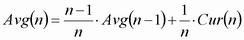
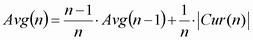
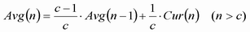

In single-shot measurements, "Average" values (traces and single values) are calculated as the arithmetic mean value over all measurement intervals since the start of the measurement. Assume that n measurement intervals have been measured. The average result at each measurement point is obtained recursively from the preceding (n - 1)st average result and the nth current result.
Equation 1:

To obtain average traces, the R&S CMW calculates the average of consecutive measurement intervals at each trace point.
The formula above is modified for the magnitude error and the phase error, where positive and negative contributions tend to compensate each other. The "Average" value of these quantities is obtained as the average of the absolute values.
Equation 2:

Logarithmic quantities are first averaged and then converted to a dB-value.
Note that the frequency error and timing error, although symmetric, is averaged according to equation 1.
For continuous measurements after the first cycle, equation 1 and equation 2 above are modified. For a statistic length c (c measurement intervals per cycle) and n > c, equation 1 is replaced by:

As a consequence, the statistic length has an impact on average results obtained in continuous measurements.